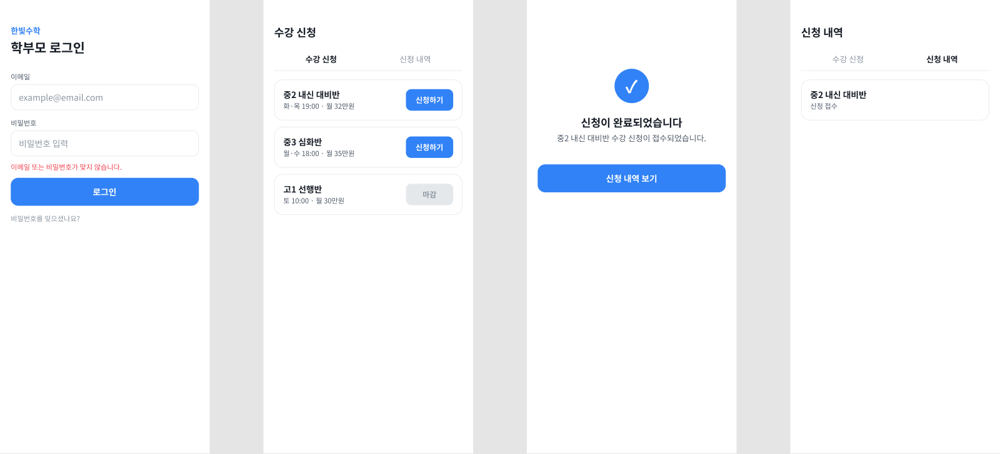
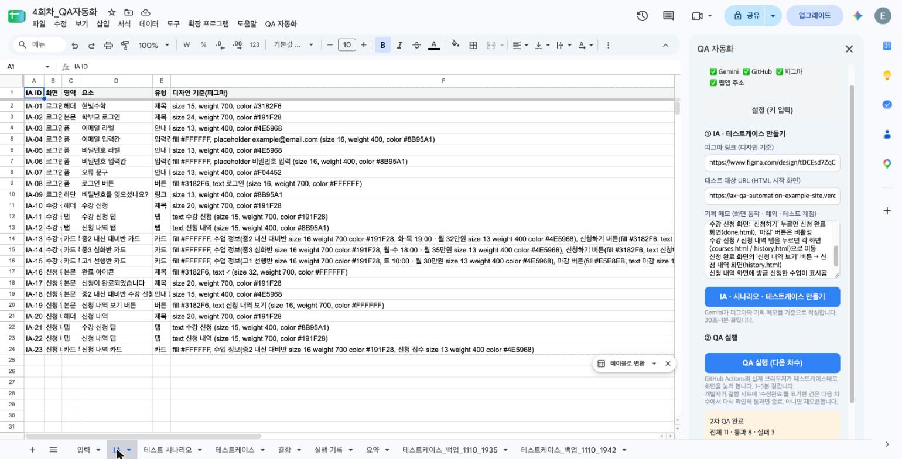
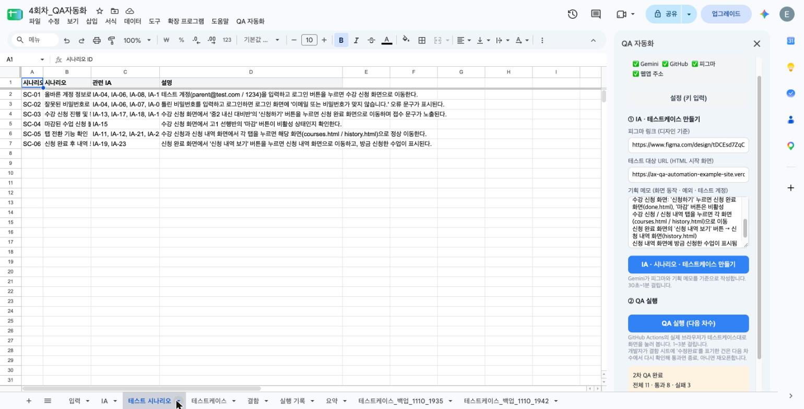
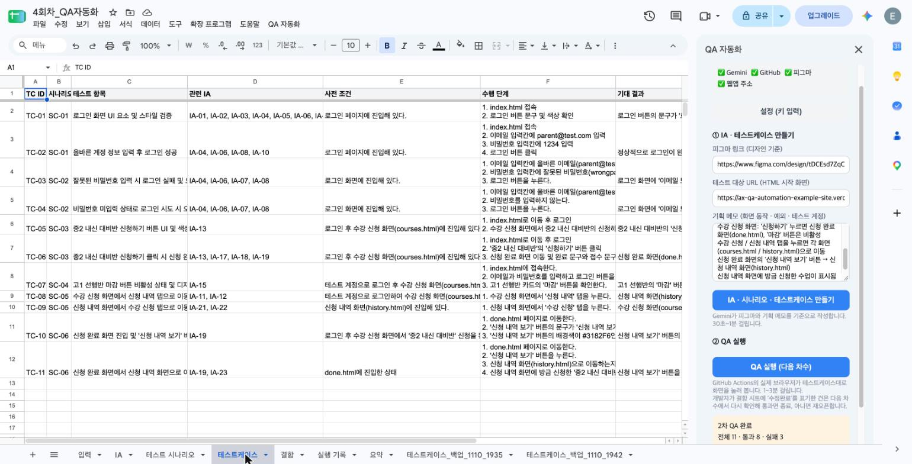
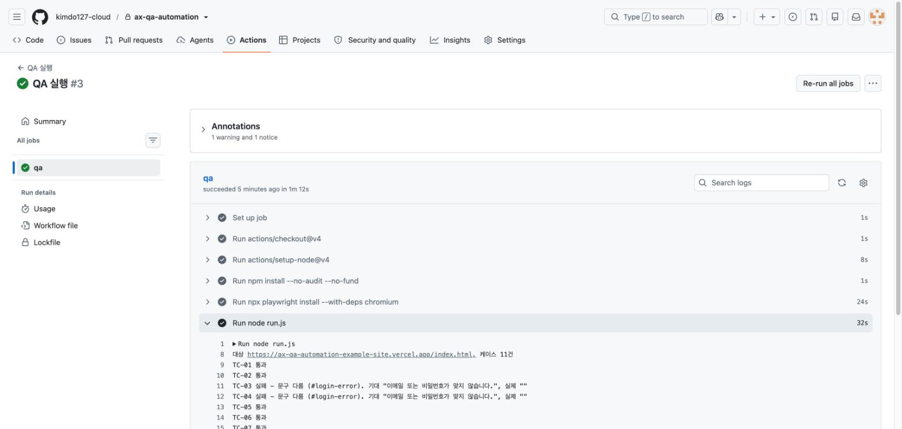
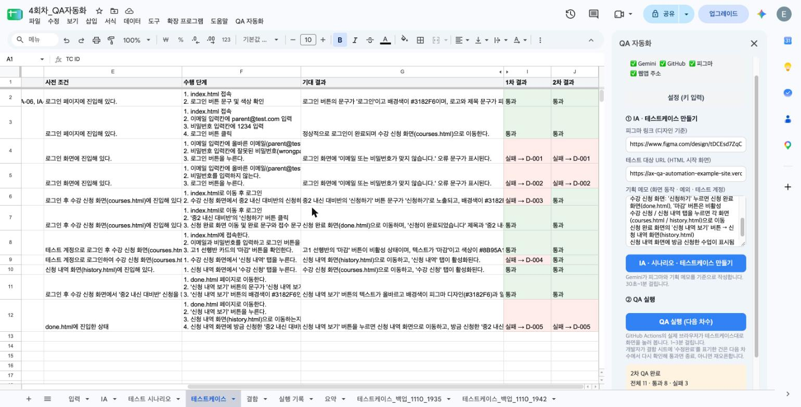
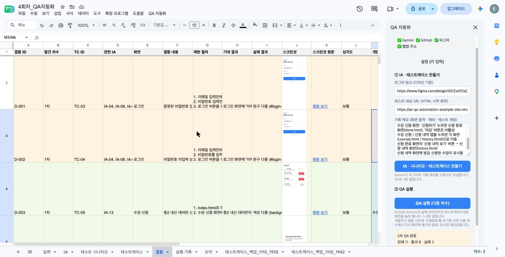
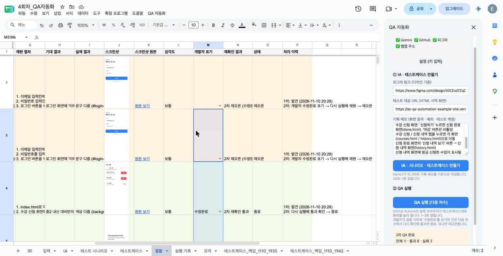
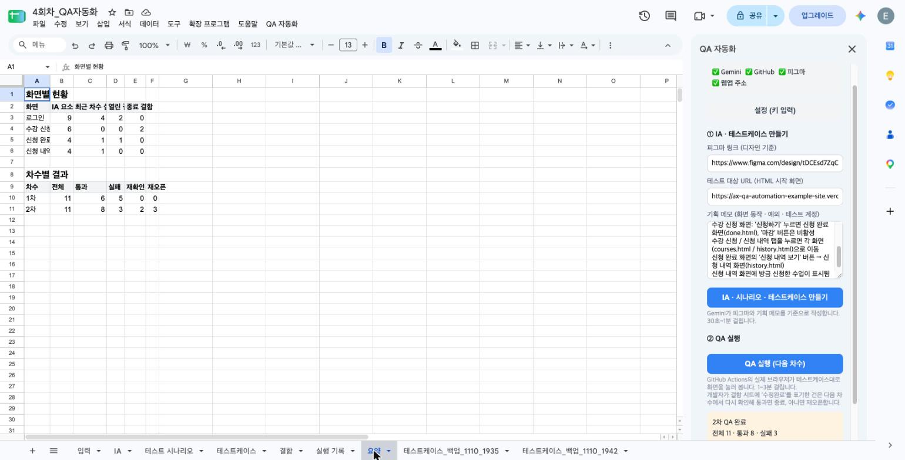

피그마 디자인을 기준으로 테스트 항목을 만들고, 실제로 화면을 눌러 보고, 고쳤다는 건을 다시 확인하는 일을 자동화했습니다.
4회차 과제 · 선택안 2안(상용 시스템 + 자동화: 구글 시트 + Gemini + GitHub Actions) · 예제 자료는 모두 가상입니다.
저는 기획자가 퍼블리싱 화면(HTML)이 나온 시점부터 발견한 문제가 모두 실제로 고쳐진 것을 확인할 때까지 하는 화면 QA를 골랐습니다. 지금은 피그마, HTML 화면, 데브옵스, 엑셀을 함께 쓰고 있고, 문제를 엑셀에 다시 옮겨 적는 일과 개발자가 "해결"로 바꾼 건을 하나씩 다시 확인하는 일이 가장 번거롭습니다.
| 순서 | 누가 | 무엇을 | 쓰는 자료 |
|---|---|---|---|
| 1 | 기획자 | 피그마 디자인과 HTML 화면을 눈으로 비교하며 버튼을 하나씩 눌러 봄 | 피그마, HTML |
| 2 | 기획자·디자이너 | 문제를 데브옵스에 등록 | 데브옵스 |
| 3 | 기획자 | 등록한 번호와 내용을 엑셀에 다시 옮겨 적어 관리 | QA 관리 엑셀 |
| 4 | 개발자 | 고친 뒤 상태를 "해결"로 바꿈 | 데브옵스 |
| 5 | 기획자 | "해결"된 건을 다시 눌러 보고 엑셀에 결과를 적음 | QA 관리 엑셀 |
| 6 | 기획자 | 2차, 3차 QA마다 1~5를 반복 | 차수별 엑셀 |
| 문제 | 구체적으로 |
|---|---|
| 확인할 곳이 기억에 의존 | 화면·영역·버튼을 정리한 목록이 없어서 차수마다 빠뜨리는 곳이 생김 |
| 같은 내용을 두 번 기록 | 데브옵스에 올린 내용을 엑셀에 다시 옮겨 적음 |
| "해결" 표시를 믿을 수 없음 | 개발자가 해결로 바꿔도 실제로는 안 고쳐진 건이 있어, 결국 전부 다시 눌러 봐야 함 |
| 이력이 흩어짐 | 어떤 문제가 몇 차에 나왔고, 다시 열렸고, 언제 끝났는지 한눈에 안 보임 |
| 구분 | 하는 일 |
|---|---|
| AI (Gemini) | 피그마와 기획 메모를 보고 화면 구조표, 시나리오, 테스트케이스 초안 작성. 정답(기대 결과)은 피그마와 기획 메모에서만 가져옴 |
| 시스템 | 실제 브라우저로 버튼을 눌러 보고, 문제를 캡처와 함께 기록. 수정완료 건을 다시 확인해 종료 또는 재오픈 |
| 기획자 | 처음 입력, 테스트 목록 검토, 재오픈 건 최종 판단 |
| 개발자 | 고친 뒤 "수정완료"만 표기. 종료는 시스템이 다시 확인한 뒤에만 됨 |
| 탭 | 내용 |
|---|---|
| 입력 | 언제 어떤 피그마·화면으로 만들었는지 |
| IA | 화면 > 영역 > 버튼·문구 단위 목록과 피그마 기준값, 최근 결과 |
| 테스트 시나리오 | 사용자 흐름 단위 (예: 로그인 후 수강 신청) |
| 테스트케이스 | 수행 단계·기대 결과, 1차·2차… 결과가 열로 계속 추가됨 |
| 결함 | 재현 절차, 기대/실제 결과, 실패 화면 캡처, 개발자 표기, 재확인 결과, 처리 이력 |
| 실행 기록 · 요약 | 차수별 통과·실패·재오픈 수, 화면별 열린 결함 수 |
예제: 수강 신청 웹 화면 4개를 피그마로 그리고, 일부러 문제 5개를 넣은 HTML 화면을 만들어 테스트했습니다.









| 차수 | 결과 |
|---|---|
| 1차 | 테스트 11건 중 5건 실패 → 결함 5건 자동 등록 (오류 문구 안 나옴, 버튼 색 다름, 신청 내역 탭 페이지 없음, 신청 내역 보기 버튼 안 움직임) |
| 2차 | 개발자가 5건 모두 "수정완료" 표기, 실제로는 3건만 수정 → 고친 건은 종료, 안 고친 오류 문구 2건은 재오픈 |
| 작동한 것 | 남은 문제 |
|---|---|
| 피그마·화면·기획 메모로 IA → 시나리오 → 테스트케이스 자동 작성 | AI가 놓치는 항목이 있음 (예: 화면 제목 오타 "수강 산청"을 확인 항목에 넣지 않음) → 기획자 검토 필요 |
| 실제 브라우저 클릭 테스트, 결함·캡처 자동 기록 | 테스트 단계가 잘못돼 실패하는 경우가 있음 (2차에서 1건) → 진짜 결함인지 기획자가 판단 |
| 수정완료 건 다시 확인 → 종료/재오픈, 차수별 이력 보존 | 간격·정렬 같은 세밀한 시각 차이는 아직 비교하지 않음 (문구·색·동작만) |
| 시트 버튼 하나로 실행 (다른 프로그램 불필요) | 데브옵스와 연결되지 않음 → 계정이 생기면 결함 등록·상태 동기화 연결 |